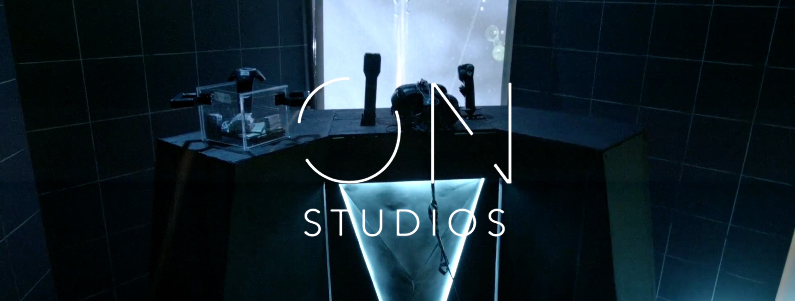
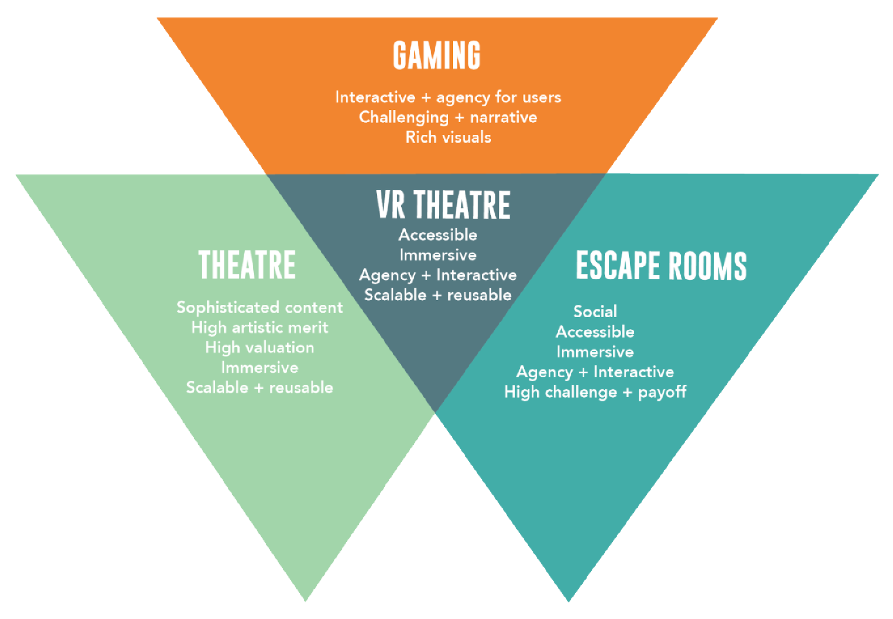
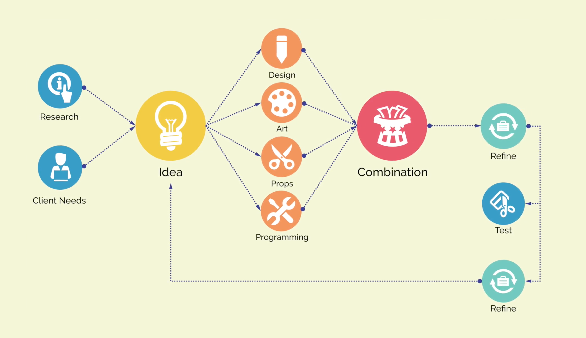
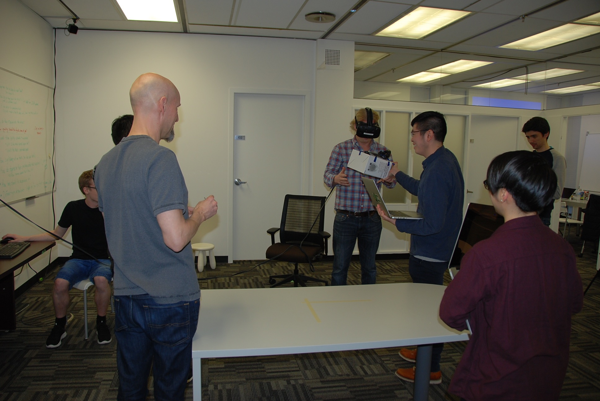
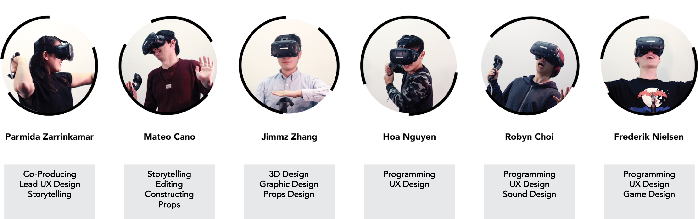

ON Studio - The Rookie
Introduction
On Studio - The Rookie was an industry project in the second term of the Master of Digital Media Program. Our mission is to expand the boundaries of VR by creating a public narrative experience in a physically immersive environment.
The Challenge
The goal of the project was to create a public VR experience that combines motion simulation and normal walking. As it was a new topic in VR, I was in charge of researching and experimenting all the techniques that could tackle the current technical constraints, in order to enable the design of the experience. Additionally, I was also responsible for building an efficient environment and pipeline for the programming team during the project.
Development Process
Production Pipeline
Our team followed the Agile Development process, in which we rapidly experimented, prototyped, tested and iterated.
Aside from being a programmer, my role in the development process was also managing the pipeline and the communication between the programmers and other members in the team, in order to ensure that the development could run smoothly and rapidly as we planned.
The pipeline and rules of play I designed for the programming team can be found here.
Development tools and devices
The Rookie was developed by Unity 5.6 Personal Version, using C# as the main programming language. We also used Gitlab as the main source control for the project.
The project was also a chance for us to learn about and experiment with some new devices, such as HTC Vive, Kinect, Leap Motion, and Arduino, as well as how to integrate them into VR Unity.
The first technical test with the client.
Motion Simulation
Different to most of the current VR games, we didn't use the Vive Controllers to control the movement. Instead, we embedded a racing wheel and a joystick into the experience to give the users an immersion of motion simulation.

The user controlling the spaceship by two levers.
Additionally, after some tests, we also found out that motion sickness was another big problem we had to solve in VR motion simulation. We minimized the motion sickness through gradual acceleration, limited rotations of movement, a view of the horizon, and limiting the user’s view with a vignette effect as well as a reduced view through the vehicle’s window of their moving environment.
Object Interaction
In the walking part of The Rookie, we needed to have the players be able to interact with the physical objects. We researched and came up with some solutions using the Vive trackers to match the physical interactable objects with its virtual 3D model. However, due to the low budget of the prototyping phase, we decided to attach the existing Vive controllers with the objects in order to make them trackable by the HTC Vive Lighthouses.

An experiment with Leap Motion in VR object interaction.
We also experimented with Leap Motion, for the purpose of giving the user their hands avatar that can provide them a better depth perception in VR world. However, the test pointed out the hands tracked by the Leap Motion didn't allign accurately with the virtual objects. Therefore, we decided not to use it for the final prototype.
Finally, the most difficult technical challenge we coped with was the calibration of the Vive controllers. Since the experience is the combination of the virtual and physical world, we needed to have the virtual objects match perfectly with the physical sets we built. However, the Vive controllers don't provide the accurate and stable tracking position, which means that everytime the Vive system is reset, the controllers appear in a different position than it was before. We tackled this problem by writing a script in Unity that fixes the initial position of the Vive controllers in the virtual world, and caches it everytime the system is reset.
Team Members
Special Thanks To
- Jonathan Dowdeswell, LFE System (Client)
- Patrick Pennefather (Advisor)
- Arts Club Theatre Company (Set construction, costumes)
- Jon Festinger (Joystick)
- Ace Martens (Construction, Hook ups)
- Mark Lange & Josh Miller (IT Heroes)
- All the testers
---
Due to the NDA with the clients, the details and the source code of the project cannot be published.